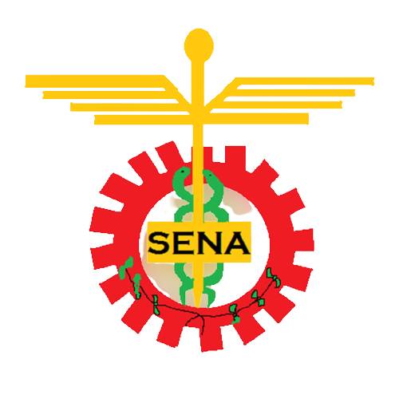

Sena
Regional Guaviare
Escudo del Sena
1. Piñon:
Sector industrial y cada diente es
cada región.
2.Caduceo y Serpiente:
Representa al comercio y servicio.
3.Rama de Caféto:
Representa al sector agropecuario.
4.Líneas doradas:
Es la riqueza de nuestro país.
